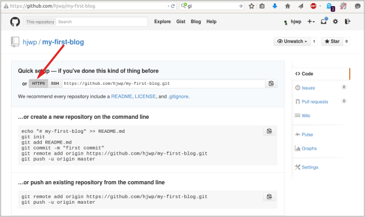

¡Despliega!
Nota: El siguiente capítulo puede ser a veces un poco difícil de superar. Se persistente y acábalo. El despliegue es una parte importante del proceso en el desarrollo web. Este capítulo está situado en el medio del tutorial para que tu tutor pueda ayudarte a poner tu sitio web en línea, lo que puede ser un proceso algo más complicado. Esto significa que podrás acabar el tutorial por tu cuenta si se te acaba el tiempo.
Hasta ahora tu sitio web estaba disponible sólo en tu ordenador, ¡ahora aprenderás cómo desplegarlo! El despliegue es el proceso de publicar tu aplicación en Internet para que la gente pueda acceder y ver tu aplicación :).
Como ya has aprendido, un sitio web tiene que estar en un servidor. Hay muchos proveedores, pero usaremos uno que tiene un proceso de despliegue relativamente simple: PythonAnywhere. PythonAnywhere es gratis para pequeñas aplicaciones que no tienen demasiados visitantes, definitivamente suficiente para este caso.
El otro servicio externo que vamos a utilizar es GitHub, un servicio de alojamiento de código. Hay otras opciones por ahí, pero hoy en día casi todos los programadores tienen una cuenta de GitHub, ¡y ahora tú también la vas a tener!
Usaremos GitHub como paso intermedio para transportar nuestro código desde y hasta PythonAnywhere.
Git
Git es un "sistema de control de versiones" usado por muchos programadores - es un sistema que registra los cambios en los archivos a través del tiempo de forma tal que puedas acceder a versiones específicas cuando lo desees. Es muy similar a la opción de "registrar cambios" en Microsoft Word, pero mucho más poderoso.
Instalar Git
Windows
Puedes descargar Git de git-scm.com. Puedes hacer clic en "Next" para todos los pasos excepto en uno; en el quinto paso titulado "Adjusting your PATH environment", elije "Run Git and associated Unix tools from the Windows command-line" (la última opción). Aparte de eso, los valores por defecto funcionarán bien. "Checkout Windows-style, commit Unix-style line endings" también está bien.
MacOS
Descarga Git de git-scm.com y sigue las instrucciones.
Linux
Si no lo tienes ya instalado, git debería estar disponible a través del administrador de paquetes, prueba con:
sudo apt install git
# o
sudo yum install git
Iniciar nuestro repositorio Git
Git rastrea los cambios realizados a un grupo determinado de ficheros en lo que llamamos un repositorio de código (o "repo" para abreviar). Iniciemos uno para nuestro proyecto. Abre la consola y ejecuta los siguientes comandos en el directorio de djangogirls:
Nota: Comprueba el directorio de trabajo actual con el comando
pwd(OSX/Linux) ocd(Windows) antes de inicializar el repositorio. Deberías estar en la carpetadjangogirls.
$ git init
Initialized empty Git repository in ~/djangogirls/.git/
$ git config user.name "Tu nombre"
$ git config user.email tú@ejemplo.com
Inicializar el repositorio git es algo que sólo necesitamos hacer una vez por proyecto (y no tendrás que volver a poner tu usuario y correo electrónico nunca más)
Git llevará un registro de los cambios realizados en todos los ficheros y carpetas en este directorio, pero hay algunos ficheros que queremos que ignore. Esto lo hacemos creando un fichero llamado .gitignore en el directorio base. Abre tu editor y crea un nuevo fichero con el siguiente contenido:
*.pyc
__pycache__
myvenv
db.sqlite3
.DS_Store
Y guárdalo como .gitignore en la primera carpeta "djangogirls".
Nota: ¡El punto al principio del nombre del fichero es importante! Si tienes dificultades para crearlo (a los Mac no les gusta que crees ficheros que empiezan por punto desde Finder, por ejemplo), usa la opción "Guardar como" en tu editor, eso no falla.
Es buena idea utilizar el comando git status antes de git add o cuando no estés segura de lo que va a hacer, para evitar cualquier sorpresa (por ejemplo, añadir o hacer commit de ficheros no deseados). El comando git status devuelve información sobre los ficheros sin seguimiento (untracked), modificados, preparados (staged), el estado de la rama y mucho más. La salida debería ser similar a:
$ git status
On branch master
Initial commit
Untracked files:
(use "git add <file>..." to include in what will be committed)
.gitignore
blog/
manage.py
mysite/
nothing added to commit but untracked files present (use "git add" to track)
Y finalmente guardamos nuestros cambios. Ve a la consola y ejecuta estos comandos:
$ git add --all .
$ git commit -m "Mi app Django Girls, primer commit"
[...]
13 files changed, 200 insertions(+)
create mode 100644 .gitignore
[...]
create mode 100644 mysite/wsgi.py
Enviar nuestro código a GitHub
Visita GitHub.com y registra una nueva cuenta de usuario gratuita. Luego, crea un nuevo repositorio con el nombre "my-first-blog". Deja desmarcada la opción "Initialise with a README", deja la opción .gitignore en blanco (lo hemos hecho a mano) y deja la licencia como "None".

Nota El nombre
my-first-bloges importante. Podrías elegir otra cosa, pero va a aparecer muchas veces en las instrucciones que siguen y tendrías que sustituirlo cada vez. Probablemente sea más sencillo quedarte con el nombremy-first-blog.
En la próxima pantalla verás la URL para clonar tu repositorio. Elige la versión "HTTPS", cópiala y en un momento la pegaremos en la consola:

Ahora tenemos que conectar el repositorio Git de tu ordenador con el que está en GitHub.
$ git remote add origin https://github.com/<your-github-username>/my-first-blog.git
$ git push -u origin master
Escribe tu nombre de usuario y contraseña de GitHub y deberías ver algo así:
Username for 'https://github.com': hjwp
Password for 'https://hjwp@github.com':
Counting objects: 6, done.
Writing objects: 100% (6/6), 200 bytes | 0 bytes/s, done.
Total 3 (delta 0), reused 0 (delta 0)
To https://github.com/hjwp/my-first-blog.git
* [new branch] master -> master
Branch master set up to track remote branch master from origin.
Tu código está ahora en GitHub. ¡Ve y míralo! Verás que está en buena compañía; Django, el Tutorial de Django Girls y muchos otros grandes proyectos de código abierto también alojan su código en GitHub :)
Configurar nuestro blog en PythonAnywhere
Es hora de registrar una cuenta gratuita de tipo "Beginner" en PythonAnywhere.
Nota: Cuando elijas tu nombre de usuario ten en cuenta que la URL de tu blog tendrá la forma
nombredeusuario.pythonanywhere.com, así que o bien elije tu propio apodo o bien un nombre que describa sobre qué trata tu blog.
Bajar nuestro código en PythonAnywhere
Cuando te hayas registrado en PythonAnywhere serás redirigida a tu panel de control o página "Consoles". Elije la opción para iniciar una consola "Bash", que es la versión PythonAnywhere de una consola, como la que tienes en tu PC
Nota: PythonAnywhere está basado en Linux, por lo que si estás en Windows la consola será un poco distinta a la que tienes en tu ordenador.
Descarguemos nuestro código desde GitHub a PythonAnywhere mediante la creación de un "clon" del repositorio. Escribe lo siguiente en la consola de PythonAnywhere:
$ git clone https://github.com/<tu-usuario-github>/my-first-blog.git
Nota: No pongas los símbolos < y >, solo escribe tu usuario.
Esto va a descargar una copia de tu código en PythonAnywhere. Compruébalo escribiendo:
$ tree my-first-blog
my-first-blog/
├── blog
│ ├── __init__.py
│ ├── admin.py
│ ├── migrations
│ │ ├── 0001_initial.py
│ │ └── __init__.py
│ ├── models.py
│ ├── tests.py
│ └── views.py
├── manage.py
└── mysite
├── __init__.py
├── settings.py
├── urls.py
└── wsgi.py
Crear un virtualenv en PythonAnywhere
Tal y como hiciste en tu propio ordenador, puedes crear un virtualenv en PythonAnywhere. En la consola Bash, escribe:
20:20 ~ $ cd my-first-blog
20:20 ~ $ virtualenv --python=python3.4 myvenv
Running virtualenv with interpreter /usr/bin/python3.4
[...]
Installing setuptools, pip...done.
20:20 ~ $ source myvenv/bin/activate
(myvenv)20:20 ~ $ pip install django==1.8 whitenoise
Collecting django
[...]
Successfully installed django-1.8 whitenoise-1.0.6
Recopilar ficheros estáticos
¿Te estabas preguntando qué es eso de "whitenoise"? Es una herramienta para servir los llamados "ficheros estáticos". Los ficheros estáticos funcionan de distinta forma en los servidores en comparación con cómo lo hacen en nuestro propio ordenador y necesitamos una herramienta como "whitenoise" para servirlos.
Aprenderemos un poco más sobre los ficheros estáticos más adelante, cuando editemos el CSS de nuestro sitio.
Por ahora sólo necesitamos ejecutar en el servidor un comando adicional llamado "collectstatic". Le dice a Django que recopile todos los ficheros estáticos que necesita en el servidor. Por el momento, principalmente son los ficheros estáticos que hacen que el panel de administración esté bonito.
20:20 ~ $ python manage.py collectstatic
You have requested to collect static files at the destination
location as specified in your settings:
/home/edith/my-first-blog/static
This will overwrite existing files!
Are you sure you want to do this?
Type 'yes' to continue, or 'no' to cancel: yes
Escribe "yes", ¡y ahí va! ¿No te encanta hacer que las computadoras impriman páginas y páginas de texto imposible de entender? Siempre hago ruiditos para acompañarlo. Brp, brp brp...
Copying '/home/edith/.virtualenvs/myvenv/lib/python3.4/site-packages/django/contrib/admin/static/admin/js/actions.min.js'
Copying '/home/edith/.virtualenvs/myvenv/lib/python3.4/site-packages/django/contrib/admin/static/admin/js/inlines.min.js'
[...]
Copying '/home/edith/.virtualenvs/myvenv/lib/python3.4/site-packages/django/contrib/admin/static/admin/css/changelists.css'
Copying '/home/edith/.virtualenvs/myvenv/lib/python3.4/site-packages/django/contrib/admin/static/admin/css/base.css'
62 static files copied to '/home/edith/my-first-blog/static'.
Crear la base de datos en PythonAnywhere
Aquí hay otra cosa que es diferente entre tu ordenador y el servidor: éste utiliza una base de datos diferente. Por lo tanto, las cuentas de usuario y las entradas pueden ser diferentes en el servidor y en tu ordenador.
Así que inicializamos la base de datos en el servidor igual que lo hicimos en nuestro ordenador, con migrate y createsuperuser:
(myvenv)20:20 ~ $ python manage.py migrate
Operations to perform:
[...]
Applying sessions.0001_initial... OK
(myvenv)20:20 ~ $ python manage.py createsuperuser
Publicar nuestro blog como una aplicación web
Ahora que nuestro código está en PythonAnywhere, el virtualenv está listo, los ficheros estáticos han sido recopilados y la base de datos está inicializada, estamos listas para publicarla como una aplicación web.
Haz clic en el logo de PythonAnywhere para volver al panel principal, haz clic en la pestaña Web y pincha en Add a new web app.
En la ventana de diálogo, después de confirmar el nombre de dominio, elije manual configuration (configuración manual) (NB la opción "Django" no). Luego, elije Python 3.4 y haz clic en "Next" para terminar con el asistente.
Nota asegúrate de elegir la opción de "Manual configuration", no la de "Django". Somos demasiado buenas para la configuración por defecto de Django de PythonAnywhere ;-)
Configurar el virtualenv
Serás redirigida a la pantalla de configuración de PythonAnywhere para tu aplicación web, a la que deberás acceder cada vez que quieras hacer cambios en la aplicación del servidor.

En la sección "Virtualenv", haz clic en el texto rojo que dice "Enter the path to a virtualenv" (Introduce la ruta a un virtualenv) y escribe: /home/<tu-usuario>/my-first-blog/myvenv/
Nota: sustituye tu propio nombre de usuario como corresponda. Si cometes un error, PythonAnywhere te mostrará una pequeña advertencia. ¡No olvides no teclear los simbolos < y >!
Configurar el fichero WSGI
Django funciona utilizando el "protocolo WSGI", un estándar para servir sitios web usando Python, que PythonAnywhere soporta. La forma de configurar PythonAnywhere para que reconozca nuestro blog Django es editar un fichero de configuración WSGI.
Haz clic en el enlace "WSGI configuration file" (en la sección "Code" en la parte de arriba de la página; se llamará algo parecido a /var/www/<tu-usuario>_pythonanywhere_com_wsgi.py) y te redirigirá al editor.
Elimina todo el contenido actual y reemplázalo con algo como esto:
import os
import sys
path = '/home/<tu-usuario>/my-first-blog' # aquí utiliza tu propio usuario, sin los simbolos < y >
if path not in sys.path:
sys.path.append(path)
os.environ['DJANGO_SETTINGS_MODULE'] = 'mysite.settings'
from django.core.wsgi import get_wsgi_application
from whitenoise.django import DjangoWhiteNoise
application = DjangoWhiteNoise(get_wsgi_application())
Nota no olvides sustituir tu propio nombre de usuario donde dice
<tu-usuario>
Este fichero se encarga de decirle a PythonAnywhere dónde vive nuestra aplicación web y cómo se llama el fichero de configuración de Django. También configura la herramienta para ficheros estáticos "whitenoise".
Dale a Save y vuelve a la pestaña Web.
¡Todo listo! Dale al botón verde grande que dice Reload y podrás ver tu aplicación. Verás un enlace a ella en la parte de arriba de la página.
Consejos de depuración
Si aparece un error cuando intentas visitar tu sitio, el primer lugar que deberás revisar para obtener información de depuración es el error log; encontrarás un enlace a él en la pestaña Web de PythonAnywhere. Mira a ver si hay algún mensaje de error ahí. Los más recientes están al final. Los problemas más comunes incluyen
- olvidar alguno de los pasos que hicimos en la consola: crear el virtualenv, activarlo, instalar Django en él, ejecutar collectstatic, inicializar la base de datos
- cometer un error en la ruta del virtualenv en la pestaña Web; suele haber un mensajito de error de color rojo, si hay algún problema
- cometer un error en el fichero de configuración WSGI; ¿has puesto bien la ruta a la carpeta my-first-blog?
¡Tu tutor está ahí para ayudar!
¡Estás en vivo!
La página por defecto de tu sitio debería decir "Welcome to Django", igual que en tu PC local. Intenta añadir /admin/ al final de la URL y te redirigirá al panel de administración. Ingresa con tu nombre de usuario y contraseña y verás que puedes añadir nuevas entradas en el servidor.
¡Buen trabajo! - los despliegues en el servidor son una de las partes más complejas del desarrollo web y muchas veces a la gente le cuesta varios días tenerlo funcionando. Pero tú tienes tu sitio en vivo, en Internet de verdad, ¡así como suena!